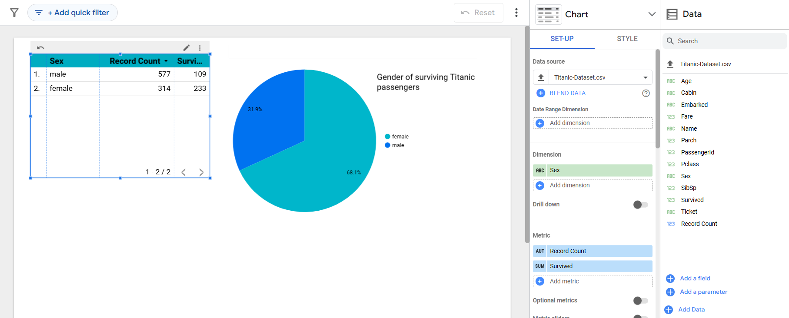

A look at Looker Studio
Gathering data and making predictions using models is an important part of data management. However, presenting it in a human-readable, pleasant, and engaging format is an entirely different mammoth task. Thankfully, long gone are the days when one would spend painstaking hours plotting thousands of data points. There are a lot of libraries and tools available for visualizing data and organizing it in an appealing format, and Google Looker Studio is one solution Google offers.
Looker Studio gives you a wide range of data visualization options. You can use it to create dashboards and interactive reports. It is free and cloud-based, allowing multiple users to work on the same report, connect many data sources, transform data into graphs and provide meaningful insights. With its drag-and-drop interface and support for real-time data updates, Looker Studio is widely used for business analytics, marketing performance tracking, and data-driven decision-making.
Setting up your first report
1. Accessing Looker Studio
Create an account for looker studio. Remember, this is a product for business, so you must enter a company’s name to sign up to looker studio. Accept the terms of service.

2. Connecting a data source
Create a blank report. Now, you must connect a data source from which you will create the graphs and draw inferences. This data source can be other looker sheets, spreadsheets, locally stored csv files, Google advertisement analytics, YouTube analytics, Databases, among many, many other connecting sources.

3. Start charting!
Now that you have connected your data, upload it to your report. For this demonstration, I have used the Titanic dataset csv. Add charts, apply filters and calculated fields as needed. Customise the themes and colours to enhance the aesthetic and readability!

Key Features
- Data Connectivity: Supports integration with various Google and third-party data sources.
- Drag and Drop Interface: User friendly, no coding required.
- Customisable charts and visualisations: Bar charts, pie charts, maps, trees among others.
- Calculated metrics: Allows users to draw inferences and make the data more meaningful
- Collaboration: Real-time editing and sharing is possible.